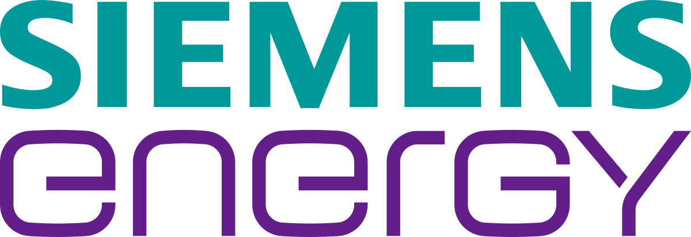

<!DOCTYPE html>
<html lang="en-GB"></html>

<!--
  Project: Backrest
  Developer: Horia-Stefan Spataru
  Copyright © 2025 Horia-Stefan Spataru. All rights reserved.
  Unauthorized copying, reproduction, or distribution of this project or its contents is prohibited.
-->


<head>

<title>Backrest Industries</title>
<link rel="stylesheet" href="../style/app.css">
<link rel="icon" type="image/x-icon" href="../../res/backrest.ico">
<script src="../jscript/app.js" defer></script>

</head>


<body>

<div class="title">
    <h1 title="La Horica' SRL">BACK & REST</h1>
    <h5>Sit <ins>back</ins> and relax, we will do the <ins>rest</ins>!</h5>
    <button id="contact">Contact</button>
</div>

<div class="image-container">
    
</div>

<div class="name">
    <h2>HORIA-STEFAN SPATARU</h2>
    <h3>Software Engineer</h3>
</div>

<div class="summary">
    <h2>Summary:</h2>
    <p>
        Software Developer and Master's degree student with a passion for technology. Skilled in communication with international colleagues, holding English and French certificates. Eager to learn and contribute in this captivating domain. 
    </p>
</div>

<div class="education">
    <h2>Education:</h2>
    <div class="acs">
        
        <h4>MSc in Artificial Intelligence</h4>
    <h4>Faculty of Automatics and Computers</h4>
    <h4>POLITEHNICA University of Bucharest</h4>
    <p>
        Learning methods and algorithms related to deep learning, machine learning, LLM , NLP , computer vision, and applying them using Python programming.
    </p>
    </div>
    <div class="uvt">
        
        <h4>BSc in Computer Science</h4>
    <h4>Faculty of Mathematics and Informatics</h4>
    <h4>West University of Timisoara</h4>
    <p>
        Developed and documented for my bachelor’s thesis project an educational Android application that uses augmented reality to display insightful visuals. The app was made using the framework Android Studio, using the programming language Java. To prepare for this task, I started an optional course named ”Programming on mobile devices where I was taught about both Java and Kotlin methods for Android development.
    </p>
    </div>
    
</div>

<div class="experience">
    <h2>Experience:</h2>
    <div class="backrest">
        
        <h4>
            BackRest
        </h4>
        <h4>Full-Stack Developer</h4>
        <h6>FOUNDED - MARCH 2024</h6>
        <p>
            Self-Employed developing websites and mobile applications for small businesses.
            All rights reserved.
        </p>
    </div>
    <div class="siemens">
        
        <h4>Siemens-Energy</h4>
        <h6 id="result"></h6>
        <h4>Junior Developer</h4>
        <h6>JULY 2024 - PRESENT</h6>
        <p>
            Developed and maintained Qt UI for Embedded Systems using C++.
            Trained in usage of Siemens PlusControl systems in Germany.
        </p>
        <h4>Intern Developer</h4>
        <h6>OCTOBER 2023 - JULY 2024</h6>
        <p>
            Developed programs with Python for digitization of Procurement processes.
Updated company relevant websites using JSON.
Modified Power BI databases using M Programming Language scripts.
Provided technical support and discussed stakeholder requirements.
        </p>
    </div>
    <div class="conti">
        
        <h4>Continental-Automotive</h4>
        <h6>1 YEAR 3 MONTHS</h6>
        <h4>Junior Developer</h4>
        <h6>DECEMBER 2022 - AUGUST 2023</h6>
        <p>
            Developed and maintained functions for a C code headers generator using VBA in Excel.
Worked with colleagues across the globe in multiple projects from prominent automobile companies, specializing in software for Airbag Control Units.
Maintained local inventory website using HTML, Node.js and MongoDB Database.
        </p>
    <h4>Intern Developer</h4>
    <h6>JUNE 2022 - DECEMBER 2022</h6>
    <p>
        Developed and documented a script using C++ , batch programming and CSV databases, that is now used by software integrators globally for debugging embedded C code.
    </p>
    </div>
</div>

<div>

    <button id="calculateButton">Refresh Dates</button>
</div>

<div class="table">
    <h2>Projects:</h2>
    <table>
        <tr>
          <th>Name</th>
          <th>Skills</th>
          <th>Institution</th>
        </tr>
        <tr>
          <td>Smart Calculator</td>
          <td>C++, MFC, Graphical User Interface (GUI), Microsoft Visual Studio</td>
          <td>West University of Timisoara</td>
        </tr>
        <tr>
          <td>Sekai Stats</td>
          <td>Microsoft Power BI, SQL, HTML</td>
          <td>West University of Timisoara</td>
        </tr>
        <tr>
            <td>Personal Website</td>
            <td>HTML, CSS, JAVASCRIPT, SQL, PHP</td>
            <td>BackRest</td>
          </tr>
      </table>
</div>

<div class="adress">
    <a href="https://www.linkedin.com/in/horia-stefan-spataru-b337a82b7/">LinkedIn Profile</a>

    <address>
        Visit us at:<br>
        Meteor 86, Targu Jiu<br>
        Romania
        </address>
    
</div>
    

</body>

</html>
